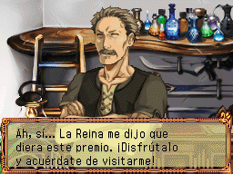
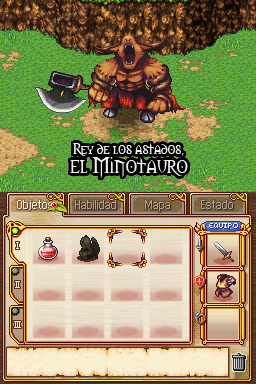
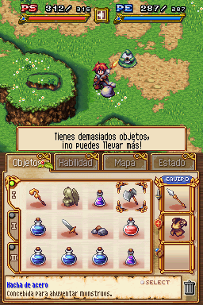

Mis proyectos
Colaboraciones
Contacto
Últimas noticias
From the Abyss
Consola:  Nintendo Ds
Nintendo Ds

 
Minicomentario: Este juego de Nintendo Ds es bastante simple, un mata-mata con elementos RPG. Se lanzó oficialmente en español aunque este proyecto vio la luz antes. ¿Resultado? Pues la localización oficial resultó de una calidad más que inferior (el que se atreva a rebatirlo, que lo haga).
Quiero agradecer a limonada que me acompañase en este proyecto. No sé nada de ella desde hace años, pero su buen hacer impregna los diálogos de este juego y mis recuerdos en este mundillo.
Las características que puedes disfrutar en este proyecto son:
-Incluídos todos los caracteres propios del español.
-Traducción de todos los gráficos.
-Los diálogos han sido modificados deliberadamente porque son bastante insulsos.